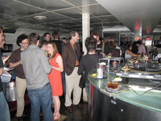

Node.js might be the most exciting single piece of software in the current JavaScript universe. Ryan received standing ovations for his talk and he really deserved it!
The Speakers of 2009
November 2009 Archive
JSconf.eu is over, but the November JavaScript Crazyness keeps rocking! Remy Sharp invites you to his JavaScript conference Full Frontal in Brighton. Take it away Remy:
Today is Monday. In 4 days time JavaScripters from across the UK and Europe will be coming together for the UK based JavaScript conference: Full Frontal. After being at JSConf.eu "JSConf.eu -- The JavaScript Conference") last weekend, I couldn't be more excited about getting a community of front end developers together again.
Full Frontal is really close to selling out, and I wanted to make a deal with you: if we sell out, Left Logic (my company, consisting of just me) promises to buy everyone a drink at the after party to kick off a great evening.
So if you're someone who's been thinking about coming along, or you know someone, this is the week to get your ticket.
The lineup consists of great topics by awesome speakers Christian Heilmann, Robert Nyman, PPK, Stuart Langridge, Todd Kloots, Jake Archibald and Simon Willison. The full schedule and abstracts are available on the web site: http://2009.full-frontal.org
Like I said, we're *really close* to selling out, so make your move now to get those last few tickets and the drinks are on me :)
Thanks Remy, this sounds like a great deal! See you all in Brighton!
Only a few days until JSConf.eu 2009. We are getting more excited every minute. Here are some infos to get you started:
ÏMA Design VillageRitterstraße 12
10969 Berlin, Germany
Preconference-Meetup (starting around 20:30 h) on Friday will be at
Manteuffelstrasse 53
10999 Berlin
Tel.: +49 (30) 23132805
Check out the schedule at sched.org or even HERE
Yes, we start at 08:30 :)
The Saturday Night Party will be at
Köthener Straße 44,
10963 Berlin
And the official Twitter hash tag will be
#jsconf
If you have more questions please comment on this post!
True story, when Holger, Malte and Jan were doing their weekly Skype call last week and looked at the pre-final schedule for JSConf.eu, they could hardly contain their excitement. Think about three boys getting the Lego pirate ship, space station and all the city gear for christmas :)
We're proud too have such a great line-up, we're happy this all worked out so far and we're glad all the speakers take the time and head to Berlin just for our little conference.
THIS IS GONNA BE FREAKING AWESOME!
Thanks everybody for helping making this happen, especially our sponsors: SinnerSchrader, couch.io, Nokia and of course ajax.org -- You all rock!
See you in 3 days in Berlin!
Unless our sched.org-integration isn't finished yet -- the API-key generation took somehow longer than expected -- you will find our tight-packed schedule with 25+ awesome talks HERE.
Be prepared for a marathon of two days of inspiring action, plenty of room for the social-thing, some fine-food & two parties for all of us.
Andy Tijn and Thomas Schuppel from Nokia will talk about mobile JS and browsers, performance and memory optimization and mobile web based UIs (Andy: Nice Shirt, by the way).
We cannot avoid it anymore: the web and mobile devices have become inseparable. The need for developing web sites and web applications for mobile devices is becoming stronger and stronger. But how do we use web technologies to build our cloud connected services on mobile phones? Do we really rely on strong logic on the server side, or can we start building full blown online and offline applications based on JavaScript, HTML and CSS only? We will discuss how we organize and develop one of the largest scalable JavaScript applications in the history of Nokia, at the same time offering a platform for tiny 3rd-party applications with major power.
Andy's Bio:
Andy pioneered JavaScript as a language to develop mobile applications in Nokias Social Location Team. There his second job is being one of the few real Berlin guys. Before joining Nokia, he was managing a ui-oriented internet agency in Amsterdam, also developing server-side and client-side web applications and web sites. Together with Thomas he's now heading the development of the Ovi SDK and evangelizing agile development to manage the exploding number of people doing JavaScript in Nokia.
Thomas' Bio:
Thomas pioneered JavaScript as a language to develop mobile applications in Nokias Social Location Team. There his second job is being one of the few real Berlin guys. Being a specialist in graphics programming, he swinged between doing award winning public installations and mobile games and applications in the past. Together with Andy he's now heading the development of the Ovi SDK and evangelizing agile development to manage the exploding number of people doing JavaScript in Nokia.
We try to make JSConf.eu as much of a community event as a technology event. As we announced earlier there is going to be a big party on Saturday night. Besides this main event we'll have two more chances to meetup and enjoy berlin at night.
On Friday there is going to be a pre-conference meetup at Bier Kombinat Kreuzberg. (There is a link to the place's website on the Google Map. Seriously, don't click on it :) The meetup starts at 20:30 (8:30 pm). We (as in the organizers) are trying to be there as well depending on the progress on getting things fixed up for the conference.
On Sunday we'll have a post conference party right at the JSConf.eu venue sponsored by SinnerSchrader (The company that employs two of the organizers and that did all the pre-financing for the conference). We'll have music, fancy visuals and, of course, beer :)
Hope to see all of you there!
Back to basics with Robert Nyman's talk about JavaScript - Form Birth to Closure.
This presentation will give you a brief background to JavaScript, what it is and where it comes from. Then it will walk you through general pitfalls, best practices and more advanced topics such as object-orientation, scope and closures.
Robert has been working with web developing, mostly interface coding, since 1998. His biggest interests lie in HTML, CSS and JavaScript, where especially JavaScript has been a love for quite some time. He regularly blogs at robertnyman.com about web developing, and is running/partaking in a number of open source projects.


{kind=link}
{kind=link}
{kind=link}
{kind=link}